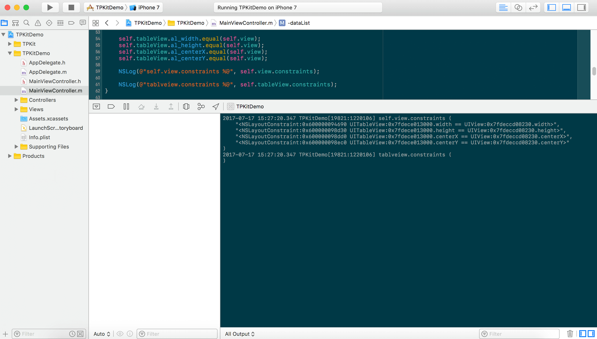
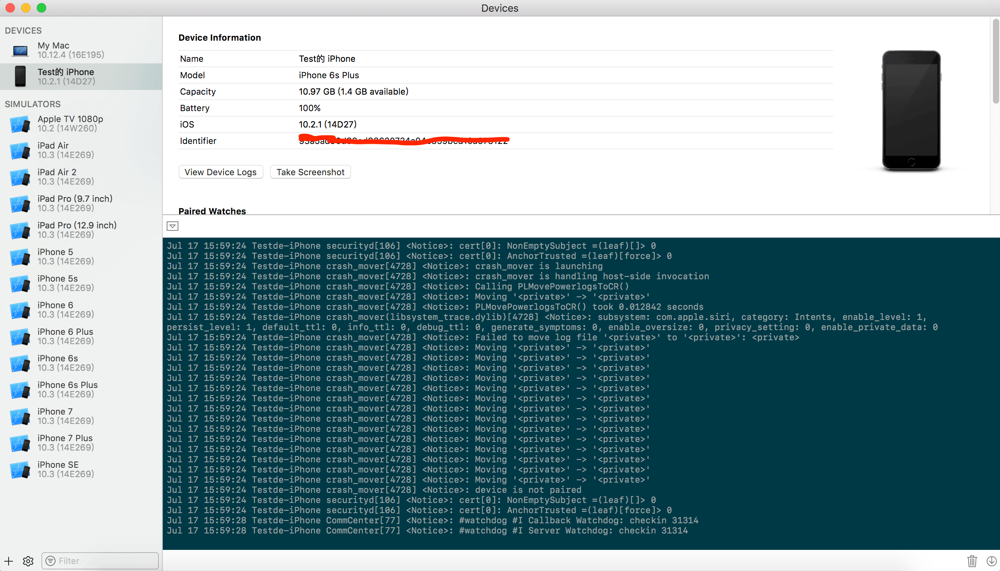
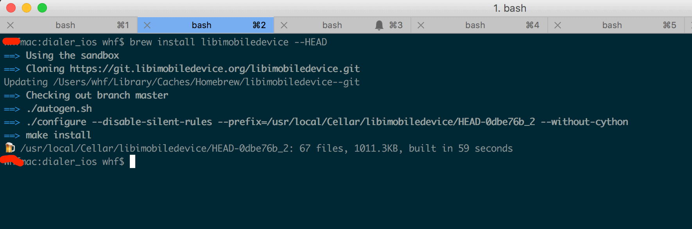
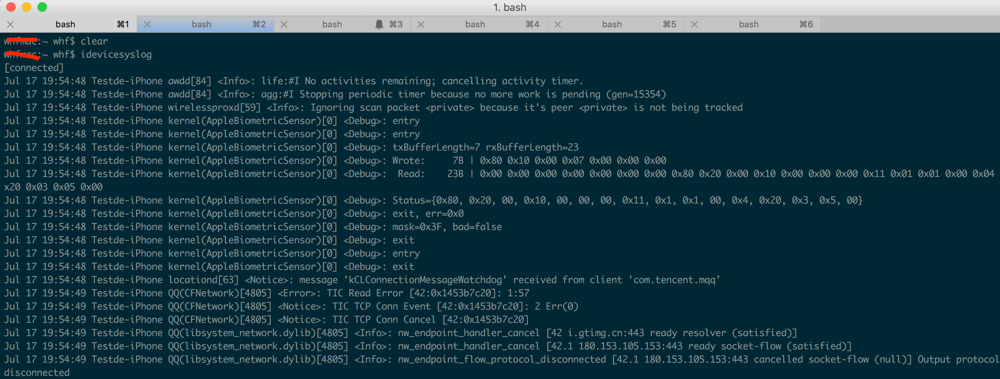
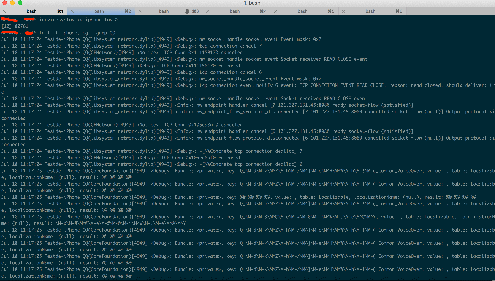
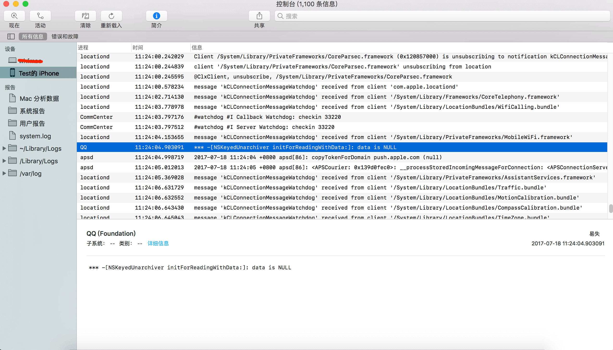
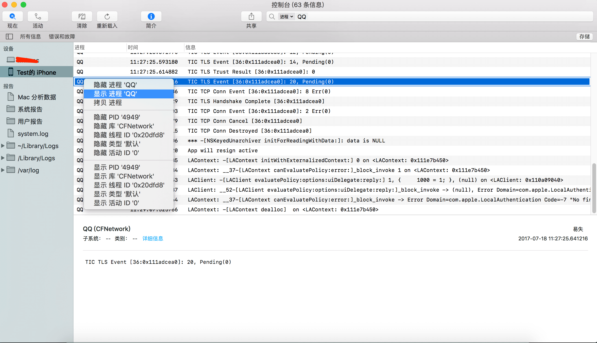
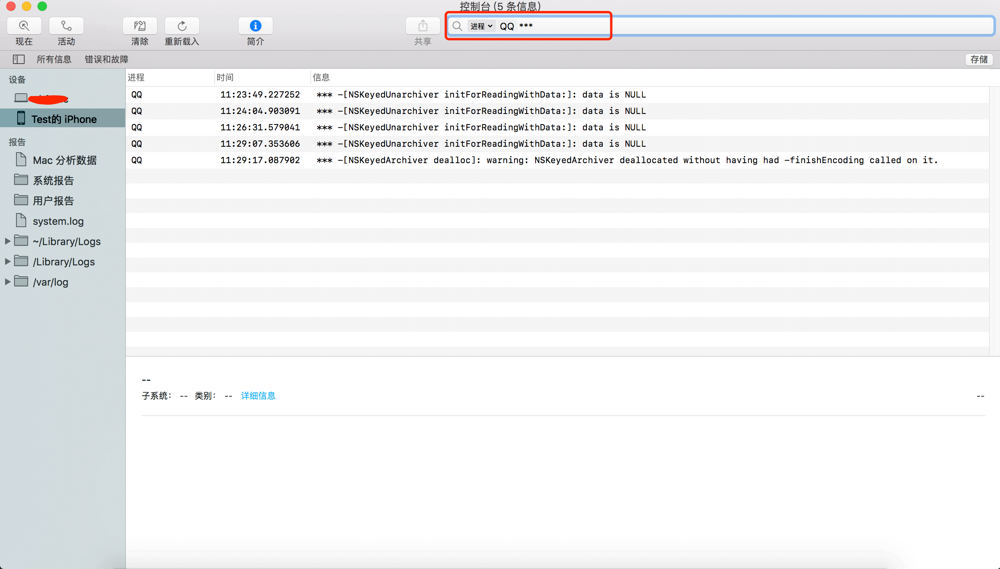

前言
可能大数人看到这个标题觉得DEBUG时在Xcode里就能看到App运行时的打印在控制台里的日志，这还需要专门写篇文章介绍下吗？其实不然，有些场景下我们还是需要实时查看App运行时的日志的，比如测试人员拿着测试机发现问题了过来找你，这时候要看运行时日志，又不能重新DEBUG安装版本，怎么办？再比如，收到并点击推送的通知后启动App，这时候要查看我们打印的日志，怎么办？还有，弄过VoIP推送同学的都知道，这个推送可以直接启动我们的App，如果要观察启动过程中的日志，这该怎么办？总不能只能连着Xcode运行时，我们才能看到日志吧。有同学可能会说，把日志写入文件，启动完成后，再把文件拷贝出来看不就完了，好了，这篇文章你一定要认真看完。
查看日志的几种方式
这里我们说的日志是输出到控制台的日志，就是我们常用的NSLog输出的日志。其实大部分App会集成日志模块，比如CocoaLumberjack，还有以前笔者学习Runloop时也造过这样的轮子SSLogger。利用第三方日志模块查看日志不在本文讨论范围内，本文只讨论如何实时查看输出在console控制台的日志。
大致有以前几种方式查看日志，一种是连着Xcode调试时，可以直接在Xcode下面的控制台输出面板上看到我们App的日志。如图:

还一种也是Xcode，通过Window->Devices打开devices界面，选择我们的手机，也能看到手机中运行的进程输出的日志。如图：

上面这两种方式大部分iOS开发应该都知道，不知道的就该检讨下了。
本文重点介绍另外两种查看运行时日志的方式： libimobiledevice 和 Console.app(控制台应用)
使用libimobiledevice工具查看日志
libimobiledevice 是一系列工具集，有很多实用的工具，截屏，安装ipa文件等等。我们要介绍的是idevicesyslog这个工具，这个工具可以把手机中的日志输出到我们指定的文件里。
- 如何安装libimobiledevice
安装libimobiledevice很简单，在命令行输入：
brew install libimobiledevice --HEAD
注意，需要加上 –HEAD 选项，如果不加，安装是老版本，不支持iOS10的手机，所以安装时，需要加上 –HEAD 选项, 如图:

如果电脑上没有brew，请看这里:brew安装传送门
如何使用idevicesyslog
很简单，在命令行输入：idevicesyslog就可以在屏幕上看见手机上所有的日志了。 
如何查看我们想要的日志
1）将设备日志重定向到文件
idevicesyslog >> iphone.log &
该命令是将日志导入到iphone.log这个文件，并且是在后台执行。
2）用tail -f和grep查看log
tail -f iphone.log
tail -f iphone.log | grep 'QQ’ # 查看包含QQ的行
如图：

使用Mac自带的控制台应用查看iOS日志
在用过各种办法查看App日志后，还是觉得苹果系统自带的工具用起来最方便，不用安装，不用命令行，傻瓜式操作，非常方便。但是还有好多同学不知道怎么用，这里简单的给大家介绍下。
连上手机，在LaunchPad其他文件中打开控制台应用，或者搜索Console.app打开控制台应用，可以看到左侧一栏中有我们的手机设备，选择就可以，如图

右侧输出的日志不仅有我们自己的App还有其他进程的日志，怎么过滤？非常简单，选中一条我们的日志，在进程名字上右键，选择显示进程名，然后就只会显示我们App的日志。如果显示的列名中没有进程名，我们可以在其他列名上右键，在弹出的菜单中勾选上进程就可以了。如图显示QQ打印出的日志：

日志还是有点多，看不清，怎么办，在右上方输入自己想要过滤出的日志，然后就会只显示你想要的，如图显示QQ打印出的日志中所有带有“***”的行

是不是很简单方便
其实这个控制台应用功能还是很多的，本文只是介绍下简单用法，大家快去试试其他功能吧。
总结
本文介绍的两种实时查看日志的方法能让我们在一些不能连上Xcode调试的场景下查看日志，对于定位解决问题很有帮助。idevicesyslog 工具使用方法更灵活，可以用grep查找更符合自己想要的日志；控制台应用查看日志更方便一点。